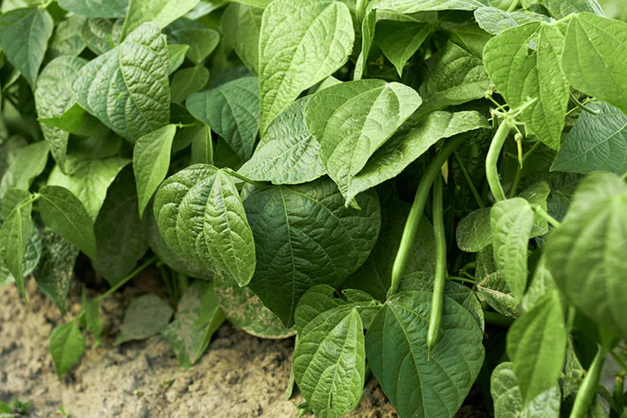

চাষপদ্ধতিঃ বীজ বপনের আগে ১০-১২ ঘন্টা বীজ ভিজিয়ে নিতে নিন। প্রতিটি মাদায় ২-৩ টি করে সুস্থ চারা রেখে বাকী চারা তুলে ফেলতে হয়। গাছ ১৫ থেকে ২০ সেন্টিমিটার লম্বা হলে মাদায় গাছের গোড়ার পাশে বাঁশের ডগা মাটিতে পুঁতে বাউনির ব্যবস্থা করুন। ডিকয়েলিংঃ চারার বয়স ৪০-৪৫ হলে শিমের ডগা পরস্পর প্যাঁচ লেগে যায়। এতে ডগার বৃ্দ্ধি এবং ফুল-ফল ধারণ ব্যাহত হয়। এজন্য প্যাঁচ ছাড়িয়ে দিন। ফসল সংগ্রহঃ জাতভেদে বীজ বপনের ৯৫-১৪৫ দিন পর শিমের শুটি (পড) গাছ থেকে তুলে বাজারজাত করা যেতে পারে। আশ্বিন-কার্তিক মাসে ফুল ধরে। ফুল ফোটার ২০-২৫ দিন পর ফসল সংগ্রহ করা যায়। ৪ মাসেরও বেশি সময় ধরে শিমের কচি শুঁটি, অপক্ব বীজ এবং পরিপক্ব বীজ সবজি হিসেবে ব্যবহার অনুসারে ৫-৭ দিন অন্তর গাছ থেকে মোট ১৩-১৪ বার গুণগত মানসম্পন্ন ফল সংগ্রহ করুন।